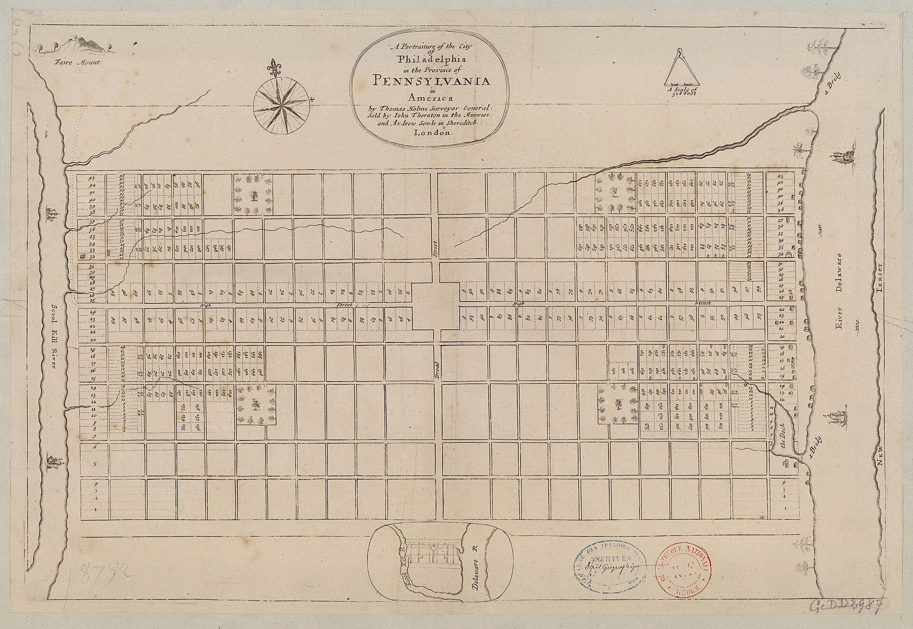

Directions: Study the map and the background, then answer the questions.

Background. The map above is Thomas Holme's plan of Philadelphia, printed in 1683, a year after the city was laid out. Its proprietor, William Penn, had received Pennsylvania's charter in 1681 and advertised the colony in English, Dutch, and German. The land the grid covers was bought from the Lenape in council. Around Penn's city, the other middle colonies held Dutch New York, taken in 1664, and Maryland, whose 1649 act protected Christian worship and punished denial of the Trinity in the same clauses. Over all of them, the Navigation Acts of 1651 and 1660 routed trade in English or colonial ships and sent enumerated goods to England first.
1. The map shows Penn's planned city. Name the document that gave Penn Pennsylvania, the year he received it, and two peoples his advertising drew to the colony.
2. The grid was drawn over Lenape land. State the standard Penn followed when he acquired that land, and name the 1737 event that broke the standard.
3. Maryland's act of 1649 is often called a toleration act. State one thing it protected and one thing it punished, and explain why both halves belong in any honest account of it.
4. A Philadelphia merchant in 1700 loads two cargoes: wheat for Barbados and tobacco for a Dutch buyer. State what the Navigation Acts allowed and forbade in his plan, and why the difference existed.
1. Penn's charter and his settlers. The charter (the royal charter of Pennsylvania) from King Charles II, received in 1681. Any two of: Quakers, Germans, Welsh, Scots-Irish, Dutch readers of the continental editions. The advertisement ran in English, Dutch, and German. (Blueprint 9)
2. Penn's standard and its breaking. Penn held that land had to be bought from its Indigenous owners, in council, as in the meetings remembered at Shackamaxon in 1682, and he paid for the land his settlers occupied. The standard broke in the Walking Purchase of 1737, when Penn's sons and agents used a doctored deed and trained runners to claim far more Lenape land than any council had agreed to sell. (Blueprint 9)
3. The act of 1649, whole. Protected: worship and its free exercise for any person professing to believe in Jesus Christ who remained loyal to the Lord Proprietary. Punished: denial of the Holy Trinity, with death and confiscation of all lands and goods (fines for reproachful religious names also earn the point). Both halves belong because the act's toleration was real and limited at once: it shielded the colony's Christian camps from each other while leaving everyone outside Trinitarian Christianity unprotected, and an account with only the protection half misstates what toleration meant in 1649. (Blueprint 9)
4. The merchant's two cargoes. The wheat could go: grain was not an enumerated good, so it could be carried to Barbados in an English or colonial ship and sold legally, which is how middle colony farmers grew rich inside the rules. The tobacco could not go to the Dutch buyer: tobacco was enumerated in the act of 1660, so it could be shipped only to England or another English plantation, in an English or colonial ship, under penalty of forfeiture of cargo and ship. The difference existed because mercantilism reserved the valuable, taxable trades to England while leaving the colonies the provisions trade England did not want. (Blueprint 10)
Teacher note. This check is formative. Question 3 is the diagnostic for the lesson's treatment of toleration: students who answer with protection only should be sent back to Station 2 of the activity, where the penalty clause is read first. Question 4 predicts success on the writing task, because it requires the growth and control halves of mercantilism in a single case.